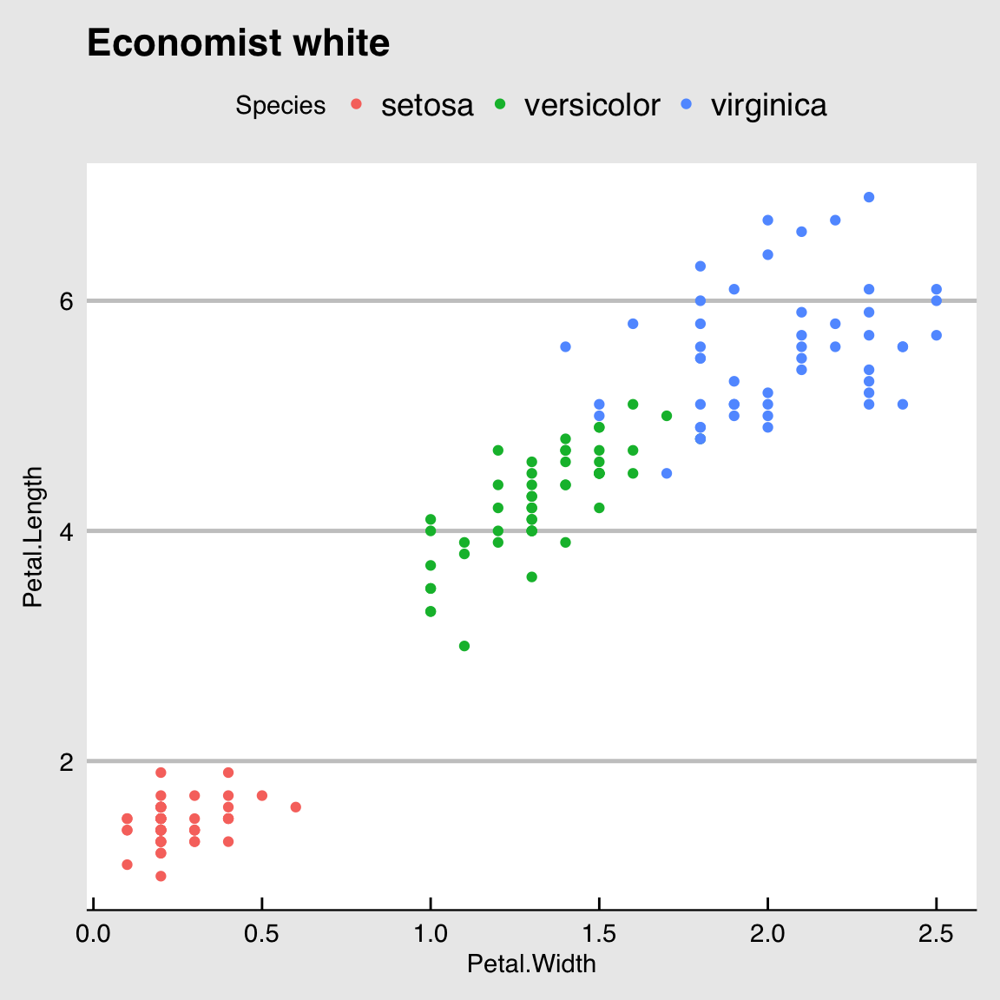
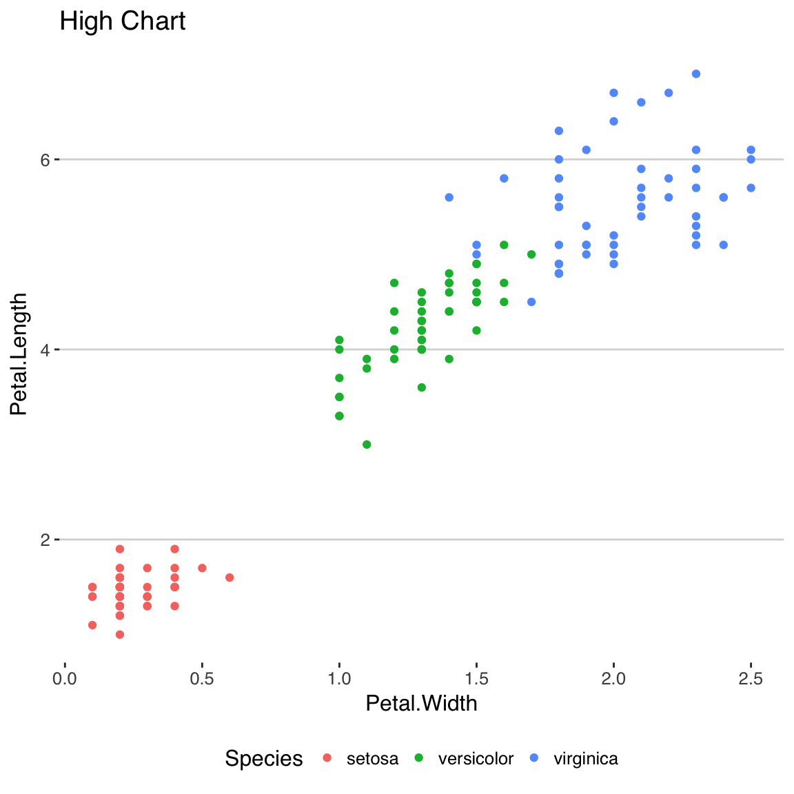
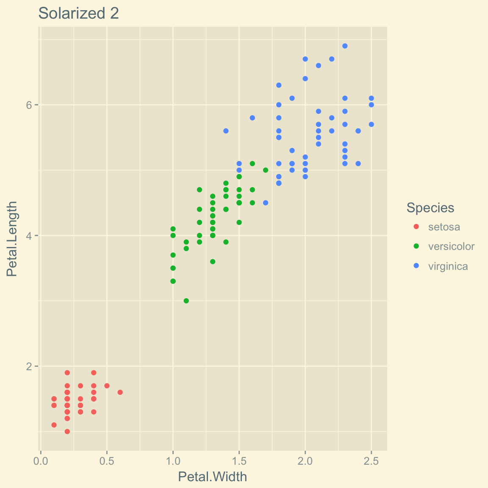

Code and tables
Syntax highlighting
Here is a sample code chunk, just to show that syntax highlighting works as expected.
library(ggplot2)
library(dplyr)
not_null <- function (v) {
if (!is.null(v)) return(paste(v, "not null"))
}
data(iris)
tab <- iris %>%
group_by(Species) %>%
summarise(Sepal.Length = mean(Sepal.Length),
Sepal.Width = mean(Sepal.Width),
Petal.Length = mean(Petal.Length),
Petal.Width = mean(Petal.Length))Verbatim
Here is the structure of the iris dataset.
str(iris)'data.frame': 150 obs. of 5 variables:
$ Sepal.Length: num 5.1 4.9 4.7 4.6 5 5.4 4.6 5 4.4 4.9 ...
$ Sepal.Width : num 3.5 3 3.2 3.1 3.6 3.9 3.4 3.4 2.9 3.1 ...
$ Petal.Length: num 1.4 1.4 1.3 1.5 1.4 1.7 1.4 1.5 1.4 1.5 ...
$ Petal.Width : num 0.2 0.2 0.2 0.2 0.2 0.4 0.3 0.2 0.2 0.1 ...
$ Species : Factor w/ 3 levels "setosa","versicolor",..: 1 1 1 1 1 1 1 1 1 1 ...Table
Here is a sample table output.
| Species | Sepal.Length | Sepal.Width | Petal.Length | Petal.Width |
|---|---|---|---|---|
| setosa | 5.006 | 3.428 | 1.462 | 1.462 |
| versicolor | 5.936 | 2.770 | 4.260 | 4.260 |
| virginica | 6.588 | 2.974 | 5.552 | 5.552 |
Here we display a crosstab displayed in several different ways with a “pills” interface. To do this, just pass your table() result to the pilltabs() function.
| (4.3,5.5] | (5.5,6.7] | (6.7,7.9] | |
|---|---|---|---|
| setosa | 47 | 3 | 0 |
| versicolor | 11 | 36 | 3 |
| virginica | 1 | 32 | 17 |
| (4.3,5.5] | (5.5,6.7] | (6.7,7.9] | Total | n | |
|---|---|---|---|---|---|
| setosa | 94.0 | 6.0 | 0.0 | 100 | 50 |
| versicolor | 22.0 | 72.0 | 6.0 | 100 | 50 |
| virginica | 2.0 | 64.0 | 34.0 | 100 | 50 |
| Ensemble | 39.3 | 47.3 | 13.3 | 100 | 150 |
| (4.3,5.5] | (5.5,6.7] | (6.7,7.9] | Ensemble | |
|---|---|---|---|---|
| setosa | 79.7 | 4.2 | 0 | 33.3 |
| versicolor | 18.6 | 50.7 | 15 | 33.3 |
| virginica | 1.7 | 45.1 | 85 | 33.3 |
| Total | 100.0 | 100.0 | 100 | 100.0 |
| n | 59.0 | 71.0 | 20 | 150.0 |
| (4.3,5.5] | (5.5,6.7] | (6.7,7.9] | |
|---|---|---|---|
| setosa | 6.16 | -4.25 | -2.58 |
| versicolor | -1.95 | 2.54 | -1.42 |
| virginica | -4.21 | 1.71 | 4.00 |
X-squared = 111.6339, df = 4, p = < 2.2e-16
Dynamic toc with for loop
We present different themes for ggplot here with a for loop.
Click an image to navigate between themes.
library(ggplot2)
library(ggthemes)
library(hrbrthemes)
ggplot_themes <- list("Black and white" = theme_bw(),
"Classic" = theme_classic(),
"Dark" = theme_dark(),
"Minimal" = theme_minimal(),
"Map" = theme_map(),
"Light" = theme_light(),
"Void" = theme_void())
ggthemes <- list("Calc" = theme_calc(),
"Economist" = theme_economist(),
"Economist white" = theme_economist_white(),
"Excel" = theme_excel(),
"Few" = theme_few(),
"Five Thirty Eight" = theme_fivethirtyeight(),
"G. Docs" = theme_gdocs(),
"High Chart" = theme_hc(),
"Inverse gray" = theme_igray(),
"Linedraw" = theme_linedraw(),
"Pander" = theme_pander(),
"Solarized" = theme_solarized(),
"Solarized 2" = theme_solarized_2(),
"Solid" = theme_solid(),
"Stata" = theme_stata(),
"Tufte" = theme_tufte(),
"Wall Street Journal" = theme_wsj())
hrbrthemes <- list("Ipsum (Arial Narrow)" = theme_ipsum())
themes <- list("ggplot2" = ggplot_themes,
"ggthemes" = ggthemes,
"hrbrthemes" = hrbrthemes)
for (j in seq_along(themes)){
cat(paste0('\n\n## ', names(themes[j]), ' themes \n\n'))
for (i in seq_along(themes[[j]])){
cat(paste0('\n\n### ', names(themes[[j]][i]), '\n\n'))
print(ggplot(data=iris) +
geom_point(aes(x=Petal.Width, y=Petal.Length, color=Species)) +
themes[[j]][i] +
ggtitle(names(themes[[j]][i])))
}
}ggplot2 themes
Black and white
Classic
Dark
Minimal
Map
Light
Void
ggthemes themes
Calc
Economist
Economist white

Excel
Few
Five Thirty Eight
G. Docs
High Chart

Inverse gray
Linedraw
Pander
Solarized
Solarized 2
